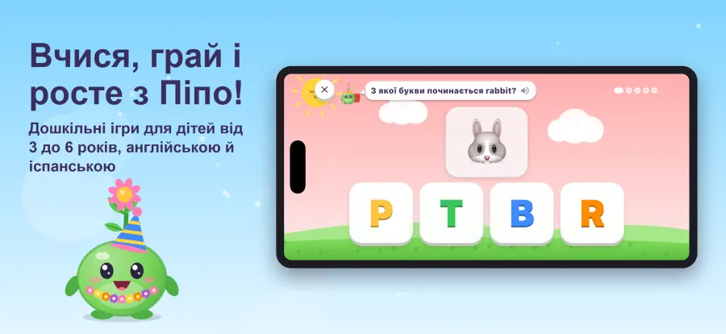
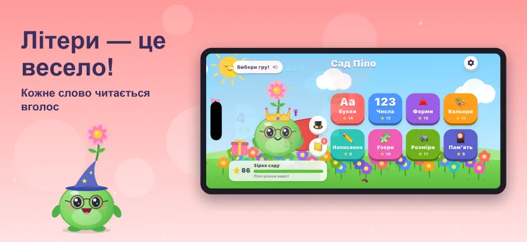
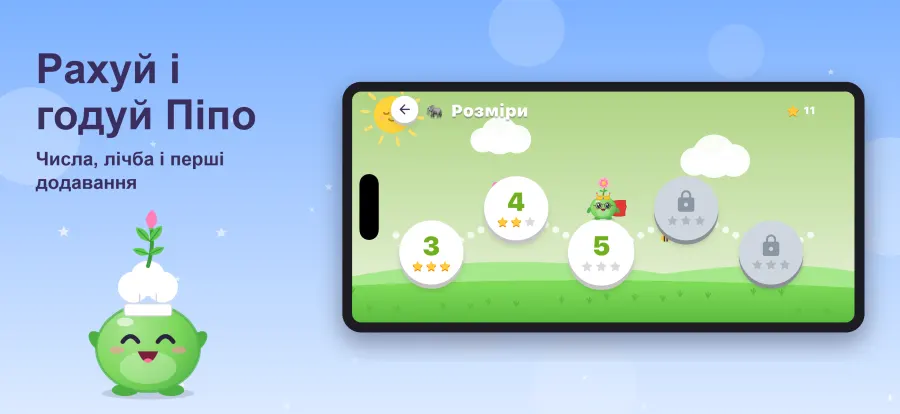
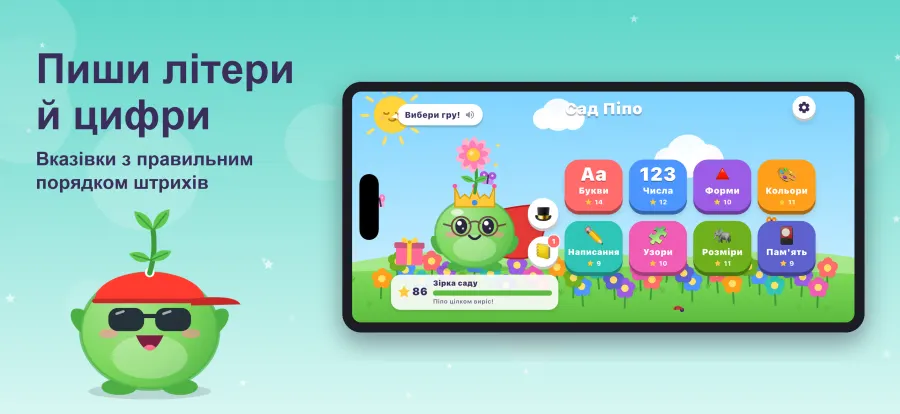
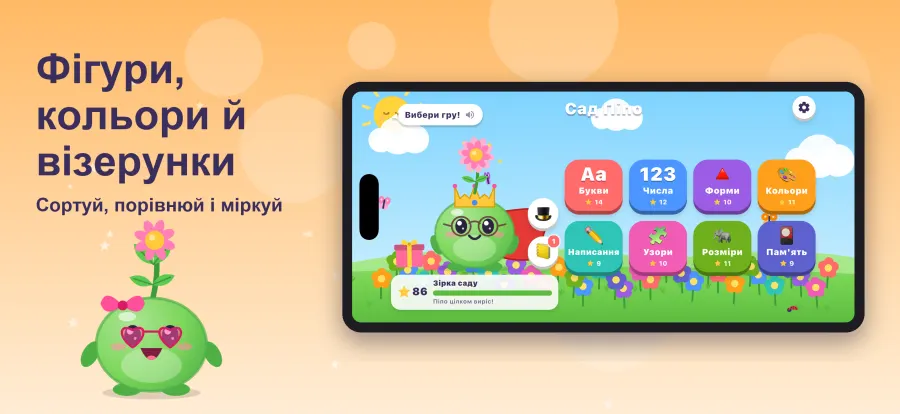
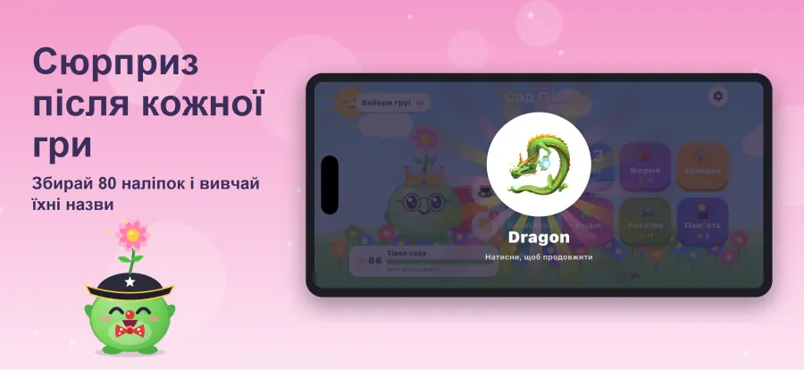
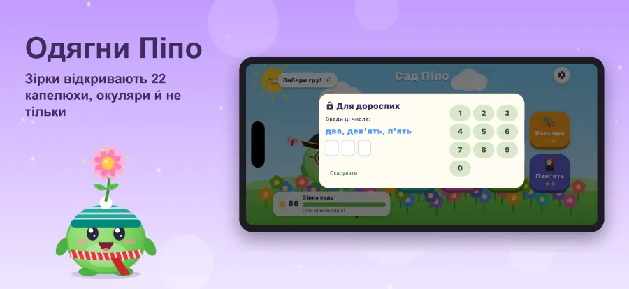
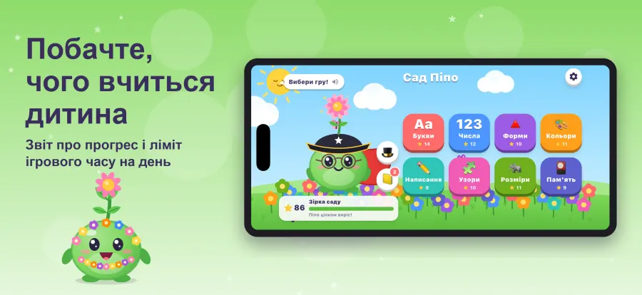
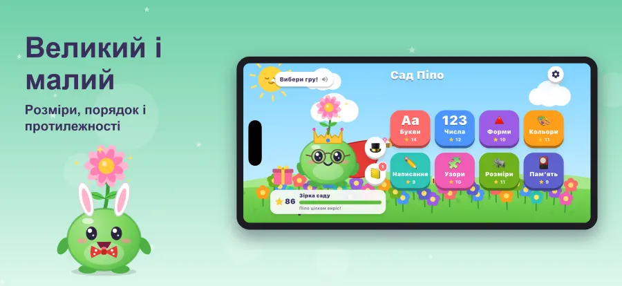

Pipo's Garden
Вік 3–6Допоможи Піпо, маленькій насінинці, вирости у квітку. Дошкільні завдання з літерами, числами, фігурами, кольорами, розмірами, прописами та послідовностями українською, англійською та іспанською.








